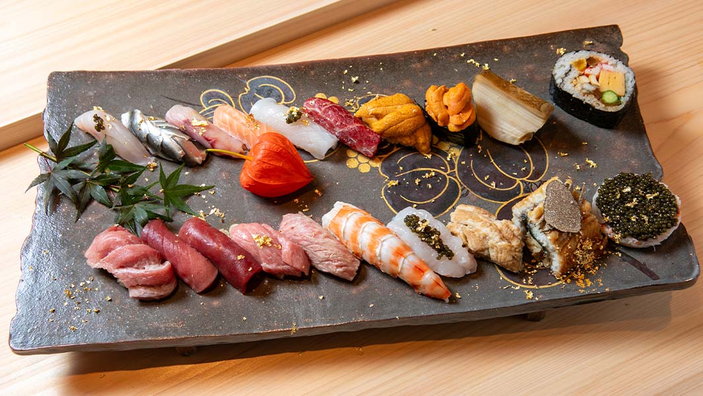

Japan is a paradise for sushi lovers — a country where every slice of fish and every grain of rice holds centuries of craftsmanship and cultural pride. Whether you’re wandering through the neon streets of Tokyo or exploring the quiet corners of Kyoto, sushi here is far more than a dish — it’s a journey into Japan’s soul. True sushi appreciation begins with understanding its artistry. Each piece reflects the philosophy of shokunin — the devotion to one’s craft. As we’ve explored in The Art of Sushi, this mastery is what turns a simple meal into an unforgettable experience.
1. Sukiyabashi Jiro, Tokyo — The Temple of Perfection
Tucked away in Tokyo’s upscale Ginza district, Sukiyabashi Jiro has become a global symbol of sushi excellence. The restaurant gained worldwide fame through the documentary Jiro Dreams of Sushi, but even before that, locals regarded it as a sacred place for true sushi purists. Chef Jiro Ono embodies the soul of dedication. Every cut, press, and gesture is performed with decades of discipline — the same meticulous spirit found in The Art of Sushi. Here, you don’t order from a menu; you surrender yourself to the chef’s mastery.
2. Sushi Saito, Tokyo — The Intimate Omakase
At Sushi Saito, the experience feels personal — almost spiritual. With only a few seats, the chef crafts each piece right before your eyes, adjusting flavors to your taste and reactions. The rice is served warm, the fish cool, creating a balance that feels effortless yet divine.
To truly enjoy such omakase experiences, it helps to know the traditional manners of eating sushi. Our guide Sushi Etiquette 101 explains how to eat like a local — from when to use your hands to the correct way of dipping sushi in soy sauce.
3. Sushi Dai, Tokyo — The Worthwhile Wait
Located at the famous Tsukiji Market, Sushi Dai is legendary for its long lines — some people wait over three hours before sunrise. But ask anyone who’s tasted it, and they’ll tell you it’s worth every second. The fish is caught that very morning, and each piece captures the freshness of Japan’s ocean bounty. Sushi Dai often features rare and regional ingredients like uni (sea urchin) and otoro (fatty tuna). For more about these delicacies, check out Beyond Tuna and Salmon, where we explore the flavors found only in Japan’s coastal waters.
4. Sushisho Masa, Tokyo — A Journey in Every Bite
Sushisho Masa offers one of Tokyo’s most unique sushi experiences. Instead of a short omakase course, guests are served over 30 small, intricate bites — each with a story. The progression of flavors takes you from light to rich, from bright to deep, much like a tasting journey through Japan’s seas and seasons. The chef often shares anecdotes about ingredients, preparation methods, and the traditions of Edo-style sushi, giving you a glimpse into how the art has evolved — a theme we explore deeply in The Evolution of Sushi.
“In Japan, sushi isn’t just eaten — it’s experienced. Every counter, every chef, and every bite reveals a new chapter of the country’s soul.”
5. Sushiyoshi, Osaka — The Spirit of Innovation
In Osaka, Sushiyoshi redefines what sushi can be. Chef Hiroki uses creativity to blend tradition with modern art. Expect unexpected pairings like yuzu citrus with white fish or wagyu beef with uni. While purists may raise an eyebrow, his experimental approach shows how sushi continues to evolve while keeping its Japanese essence alive.
6. Hakodate Morning Market, Hokkaido — The Taste of the North
Up north in Hokkaido, the Hakodate Morning Market is a seafood lover’s dream. The sushi here bursts with freshness — scallops so sweet they almost melt, and salmon roe that pops like ocean pearls. The cold northern waters give the fish their distinct texture and richness.


7. Sushi Matsumoto, Kyoto — The Quiet Art of Tradition
In the ancient capital of Kyoto, Sushi Matsumoto preserves the elegance of Kyoto-style sushi, known for its delicate seasoning and presentation. The chef’s calm, graceful movements reflect the beauty of restraint — proof that minimalism can be deeply expressive.“Sushi Etiquette 101: How to Eat Sushi Like a Local.”
8. Umi, Tokyo — Modern Luxury
Sushi Umi offers a luxurious yet unpretentious omakase experience. The menu changes daily based on what’s fresh, but every piece feels like a work of art. The chef’s warm hospitality and modern presentation make it a favorite among both locals and visitors seeking a refined touch of modern Japan.
If you love discovering new and lesser-known sushi bars, you’ll enjoy Hidden Sushi Gems, which reveals secret sushi spots across Japan.
9. Ganko Sushi, Osaka — Affordable Authenticity
Not every great sushi experience needs to be high-end. Ganko Sushi, with locations across Osaka, offers high-quality sushi at accessible prices. The chefs take pride in maintaining authentic techniques, even in a more casual setting. It’s the perfect introduction for travelers new to Japanese sushi culture.
10. Nemuro Hanamaru, Sapporo — Conveyor-Belt Delight
End your journey with something fun: a kaiten-zushi (conveyor-belt sushi) restaurant that proves good food doesn’t always have to be serious. At Nemuro Hanamaru, plates of colorful sushi glide past, and you simply grab what catches your eye. The quality here is outstanding — fresh Hokkaido seafood served with heart. Even this casual style has its roots in Edo-period traditions, connecting back to the long history described in The Evolution of Sushi.